Taiwan, lake and city
Misty lake mornings at Sun Moon Lake, a sky lantern over Shifen's railway tracks, xiaolongbao under Taipei 101, and Keelung's harbour night market. One relaxed outing each morning, a proper rest every afternoon, and a lot of eating in between.
- 桃園TaoyuanLand, pick up the car
- 台中Taichung1 night · The Lin Hotel
- 日月潭Sun Moon Lake2 nights · The Lalu
- 台北Taipei4 nights · Palais de Chine
- 基隆KeelungDay trip, night market
Down to the lake by car, back up to Taipei by bullet train
Solid dashed lines are drives, the grey dotted line is the high-speed train. They join the stops in order and aren't the exact roads. Tap a marker for the day and a Google Maps link.
Three hotels, seven nights
| Nights | Hotel | Why this one | Google Maps |
|---|---|---|---|
| Sat 28 Nov 1 night | The Lin Hotel Xitun, Taichung | Walk to the National Taichung Theater, 4 min to Fengjia. Free parking, cots in every room. | Map |
| Sun 29 – Mon 30 2 nights | The Lalu Sun Moon Lake | On the lakeshore, with the Lake View Chinese Restaurant upstairs for the special dinner. | Map |
| Tue 1 – Fri 4 4 nights | Palais de Chine Hotel Taipei Main Station | A few minutes' walk from the HSR and Airport MRT, so arrival and departure are easy. Family rooms, free cots. | Map |
Not booked yet. Ask each hotel for a cot and, where needed, connecting rooms for the grandparents.
The week in one table
Every stop, in order. Tap a day to open its full page, or a pin to open the place in Google Maps.
| Day | Start | Description | Google Maps |
|---|---|---|---|
| Day 1Sat 28 NovThe Lin Hotel, Taichung | Morning | Fly Singapore → Taoyuan | Map |
| ~13:00 | Immigration, bags, SIM cards | ||
| ~14:00 | Collect the rental car at the airport | ||
| ~14:45 | Drive south on Freeway 3 | ||
| ~15:45 | Rest stop at Qingshui Service Area | Map | |
| ~17:00 | Check in at The Lin Hotel | Map | |
| 18:30 | Dinner near the hotel | ||
| 20:00 | National Taichung Theater at night | Map | |
| 20:30 | Optional night market: Fengjia | Map | |
| Day 2Sun 29 NovThe Lalu, Sun Moon Lake | 09:30 | Miyahara | Map |
| 10:30 | Sun cakes and the original bubble tea | ||
| 11:00 | Calligraphy Greenway | Map | |
| 12:00 | Lunch in Taichung | ||
| 13:00 | Drive towards the lake | ||
| 14:15 | Sun Moon Old Tea Factory | Map | |
| 15:30 | Last stretch to the lake | ||
| 16:00 | Check in at The Lalu | Map | |
| Dusk | Shuishe boardwalk | Map | |
| 18:00 | Optional night market: Puli City Night Market | Map | |
| Day 3Mon 30 NovThe Lalu, Sun Moon Lake | 06:30 | Sunrise on the water | Map |
| 08:00 | Lake-view breakfast | ||
| 09:30 | Boat pass from Shuishe Pier | Map | |
| 10:00 | Xuanguang Pier tea eggs | Map | |
| 11:00 | Ita Thao village | Map | |
| 13:30 | Back to the hotel | ||
| 16:30 | Golden hour by the water | ||
| 16:45 | Optional night snacks: Ita Thao street stalls | Map | |
| 18:00 | Special dinner: The Lake View Chinese Restaurant, The Lalu | Map | |
| Day 4Tue 1 DecPalais de Chine Hotel, Taipei | 08:30 | Breakfast and check out of The Lalu | |
| 10:30 | Sun Moon Lake Ropeway | Map | |
| 11:45 | Drive to Taichung HSR station | Map | |
| 13:15 | Return the car | ||
| 14:00 | High-speed rail to Taipei | ||
| 15:15 | Check in at Palais de Chine | Map | |
| 18:00 | Optional night market: Ningxia | Map | |
| Day 5Wed 2 DecPalais de Chine Hotel, Taipei | 08:00 | Beef noodle soup breakfast-brunch | |
| 10:00 | Taipei 101 Observatory | Map | |
| 11:30 | Din Tai Fung, Taipei 101 | Map | |
| 13:30 | Back to the hotel to rest | ||
| 16:45 | Ciyou Temple | Map | |
| 17:15 | Optional night market: Raohe | Map | |
| Day 6Thu 3 DecPalais de Chine Hotel, Taipei | 09:00 | Driver picks you up at the hotel | |
| 10:00 | Release a sky lantern at Shifen | Map | |
| 10:45 | Shifen Waterfall | Map | |
| 12:30 | Lunch and tea in Jiufen | Map | |
| 15:00 | Rest in the van | ||
| 17:00 | Keelung Miaokou Night Market | Map | |
| 19:15 | Back to Taipei | ||
| Day 7Fri 4 DecPalais de Chine Hotel, Taipei | 09:30 | National Palace Museum | Map |
| 12:00 | Lunch near the museum | ||
| 13:30 | Hotel rest | ||
| 16:00 | Dihua Street, Dadaocheng | Map | |
| 17:00 | Sunset at Dadaocheng Wharf | Map | |
| 18:30 | Optional night market: Shilin | Map | |
| Day 8Sat 5 Dec | 07:00 | Fu Hang Soy Milk | Map |
| 09:00 | Pack and check out | ||
| Flight −3 h | In-town check-in at Taipei Main Station | Map | |
| Flight −2.5 h | Airport MRT express to Taoyuan | Map | |
| Afternoon | Fly Taoyuan → Singapore |

Land and roll into Taichung
A travel day kept deliberately light: land, collect the car at the airport, and an easy freeway drive to Taichung with one rest stop on the way.
- MorningFly Singapore → Taoyuan Map
About 4.5 hours. Book the bulkhead bassinet row and feed the baby on take-off and landing to ease ear pressure.

4300streetcar · CC BY 4.0 - ~13:00Immigration, bags, SIM cards
Pick up eSIM or a local SIM at the arrivals hall counters. Change a little cash (NT$) for night markets; most small food stalls are cash-only.

Meutnake Ah ManHO · CC0 - ~14:00Collect the rental car at the airport
Rental counters are in the arrivals halls. Allow 30–45 minutes for paperwork and the walk-round. Fit the infant seat, set up phone navigation, and do 10 minutes of slow laps in the car park to get used to driving on the right.

Alexander Migl · CC BY-SA 4.0 - ~14:45Drive south on Freeway 3
About 2 hours, around 150 km. Freeway 3 is quieter than Freeway 1 and avoids Taipei traffic. Stay in the middle lane, and let the passenger handle navigation.

Benlisquare · CC BY-SA 4.0 - ~15:45Rest stop at Qingshui Service Area Map
A hilltop service area overlooking the Taichung coast with clean toilets, nursing rooms and a food court. Stretch, feed the baby, and swap drivers.

Bahnfrend · CC BY-SA 4.0 - ~17:00Check in at The Lin Hotel Map
In Xitun, a 6-minute walk from the National Taichung Theater and about 4 minutes' drive from Fengjia. Free self-parking, family rooms, and infant cots in every room. Unpack only what's needed for one night.

michael spadoni · CC0 - 18:30Dinner near the hotel
Xitun has malls with food courts that suit everyone. Have the first bubble tea of the trip.

Wpcpey · CC BY 4.0 - 20:00National Taichung Theater at night Map
Toyo Ito's opera house has no straight walls. Free to wander in; the rooftop garden is open in the evening.

Theserious · CC0 - 20:30Optional night market: Fengjia Map
Taiwan's biggest night market, open every evening, about 10 minutes from Xitun. It's a Saturday so it will be packed: one adult can make a quick snack run while the others take the baby back to the hotel. Try grilled squid, big fried chicken cutlets and anything with a queue.

Chensiyuan · CC BY-SA 4.0
Driving today
- Taoyuan airport → Taichung ~150 km on Freeway 3.
- You'll be tired after the flight: one rest stop, no rushing, aim to arrive before dark (sunset ~17:10).
- Avoid Taipei: don't follow any sat-nav route north into the city.
- Photograph every side of the car at pick-up.
Baby & grandparents
- Gate-check the stroller; you'll have it right at the aircraft door.
- Nursing rooms in Taoyuan's arrivals hall.
- Grandparents: aisle seats near the bassinet row.
Good to know
- Taiwan's online arrival card should be done before you fly.
- Load an EasyCard at any 7-Eleven for small purchases and parking.

Ice cream, then up to the lake
A sweet morning in Taichung, lunch near the Greenway, tea tasting at an old tea factory in the hills, and the first sight of Sun Moon Lake by late afternoon.
- 09:30Miyahara Map
A 1920s eye clinic turned dessert palace with Harry Potter-style bookshelves. Ice cream with pineapple-cake or cheesecake toppings, plus beautifully boxed gifts. Doors open around 10; arrive early on a Sunday. Paid car parks are a short walk away.

Ralff Nestor Nacor · CC BY-SA 4.0 - 10:30Sun cakes and the original bubble tea
Pick up sun cakes, Taichung's flaky honey pastry, for the road. Chun Shui Tang Map claims to have invented pearl milk tea; its Siwei branch is the original.

Ralff Nestor Nacor · CC BY-SA 4.0 - 11:00Calligraphy Greenway Map
A long, shaded park strip with cafés and design shops. Flat and stroller-friendly.

Dquai · CC BY-SA 4.0 - 12:00Lunch in Taichung
The Greenway and nearby Shin Kong Mitsukoshi Map have plenty of family-friendly restaurants, from braised pork rice to hotpot, with nursing rooms in the mall.

黃 zero · CC BY-SA 2.0 - 13:00Drive towards the lake
About 1 hour 15 minutes on Freeway 6, then Provincial Highway 21 past Puli. Tunnels and mountains, easy and well-lit. Good point to swap drivers.

OnionBulb · CC BY-SA 4.0 - 14:15Sun Moon Old Tea Factory Map
A 1950s tea factory in the hills above the lake that still makes organic black tea. Walk through the old drying and rolling floors, taste Red Jade and Assam teas side by side, and try the black-tea ice cream and pastries in the café. Mostly indoors, about an hour.

舟集 Boattoad · CC BY-SA 4.0 - 15:30Last stretch to the lake
About 15 minutes of gently winding road. Take it slowly; it's the first look at the water.

舟集 Boattoad · CC BY-SA 4.0 - 16:00Check in at The Lalu Map
The lakeside resort on the Shuishe side, home of tomorrow night's dinner restaurant. Ask for a lake-view room and a cot, and use the hotel car park.

Dquai · CC BY-SA 4.0 - DuskShuishe boardwalk Map
A flat waterfront walk as the lights come on across the water.

Dquai · CC BY-SA 4.0 - 18:00Optional night market: Puli City Night Market Map
The nearest proper night market to the lake, open only Friday to Sunday from 17:30, so tonight works. About 30 minutes' drive back to Puli, with a free car park and public toilets. Herbal soup, honey-glazed grilled chicken, sweet potato balls and grilled quail eggs. If everyone is tired, have dinner in Shuishe village instead.

Maya-Anaïs Y. · CC BY 2.0
Driving today
- Taichung → Puli ~55 km, Puli → lake ~20 km.
- Tolls are charged automatically and settled when you return the car.
- Scooters swarm city junctions. Never turn right on red; watch the scooter waiting boxes.
Eat today
- Miyahara ice cream
- Sun cakes
- Pearl milk tea
- Pineapple cakes from Miyahara
- Black-tea ice cream at the tea factory
If it rains
- Skip the Greenway. Miyahara, the mall and the tea factory are all indoors.

A whole day on the lake
No packing, no driving. Boats between piers, snacks at every stop, a long afternoon rest and a special dinner by the water.
- 06:30Sunrise on the water Map
Everyone: a stroller or carrier walk along the flat Shuishe boardwalk as the mist lifts. Optional for one adult while the others mind the baby: rent a bike for an hour and ride the lakeside path towards Xiangshan, including a boardwalk that floats over the water. Back for breakfast.

rheins · CC BY 3.0 - 08:00Lake-view breakfast
The mist usually lifts around now.

阿道 · CC BY-SA 4.0 - 09:30Boat pass from Shuishe Pier Map
A one-day pass (about NT$300 adults, NT$100 for under-3s) lets you hop Shuishe → Xuanguang → Ita Thao → Shuishe as often as you like. Boats run roughly 09:00–17:00, about every 30 minutes on weekdays and every 15–20 minutes at weekends. There are no regular night boats, so the last boat back to Shuishe is around 17:00. Check in 5–10 minutes before departure.

Webbyj · CC BY-SA 3.0 - 10:00Xuanguang Pier tea eggs Map
The lake's most famous snack: eggs simmered for hours with mushrooms and black tea. Short stairs up to Xuanguang Temple if anyone fancies it.

Dllu · CC BY-SA 4.0 - 11:00Ita Thao village Map
Home of the Thao people. Graze on millet mochi, grilled mountain-pork sausage and fresh fruit along the main street, then an early lunch.

Abasaa · Public domain - 13:30Back to the hotel
Baby naps. Spa slot or pool time while the others take turns on baby duty.

Dquai · CC BY-SA 4.0 - 16:30Golden hour by the water
Best light for family photos is the last hour before sunset (about 17:10).

Jimmy Kao · CC BY-SA 3.0 - 16:45Optional night snacks: Ita Thao street stalls Map
There's no night market at the lake on a Monday (Puli's only runs Friday to Sunday). Ita Thao's main street has 20-plus food stalls that stay open into the early evening, most closing by about 20:00. Drive over for wild boar sausage and grilled mushrooms as a light snack, and watch the sunset from the pier before the 18:00 dinner.

YangChen(TW) · CC BY 2.0 - 18:00Special dinner: The Lake View Chinese Restaurant, The Lalu Map
On the 7th floor of The Lalu with an unobstructed view over the lake. Hong Kong and Shanghai cooking, plus dishes from the hotel's Chiang Kai-shek era. Dinner from 18:00; book a window table on +886 49 285 6888 and mention the baby so they can set up a high chair.

Dquai · CC BY-SA 4.0
Driving today
- The car stays parked all day. Boats and the hotel shuttle do the work.
Eat today
- Tea eggs at Xuanguang
- Red Jade black tea, grown on the slopes around the lake
- Millet mochi and mountain sausage in Ita Thao
Baby & grandparents
- Bring the carrier for the boats; leave the stroller at the hotel.
- Pack a warm layer: it's windy on the water.
If it rains
- Boats still run in light rain. In heavy rain, drive 10 minutes to Xiangshan Visitor Center or Wenwu Temple, both covered.

Over the ridges, then the fast train north
A last cable-car ride over the lake, drive down to Taichung to hand back the car, and the high-speed train whisks everyone to Taipei in under an hour.
- 08:30Breakfast and check out of The Lalu
Load the car before the ropeway so you can head straight off afterwards. Pick up Red Jade black tea to take home from a lakeside tea shop.

舟集 Boattoad · CC BY-SA 4.0 - 10:30Sun Moon Lake Ropeway Map
Opens 10:30 on weekdays. Seated gondolas glide about 1.9 km over the ridges with the lake opening up below; the ride takes about 10 minutes each way. Round trip under an hour.

CEphoto, Uwe Aranas · CC BY-SA 3.0 - 11:45Drive to Taichung HSR station Map
About 1 hour 15 minutes, mostly Freeway 6 and Freeway 3. Swap drivers at the halfway point. Grab lunch in the station or the shops around it.

OnionBulb · CC BY-SA 4.0 - 13:15Return the car
Refuel nearby first. The rental counters sit right by the station entrance; allow 20–30 minutes for the check and toll settlement. This is the end of the driving part of the trip.
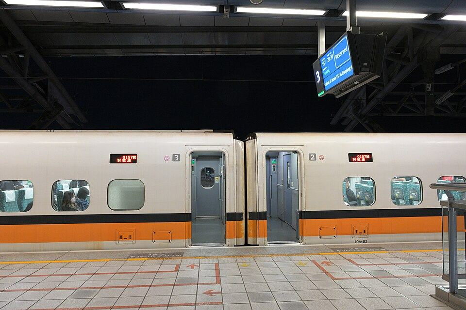
4300streetcar · CC BY 4.0 - 14:00High-speed rail to Taipei
About 50–60 minutes. Book a car with the big luggage racks and sit near them. Reserved seats can be bought online or at the ticket machines; under-6s ride free on a lap.
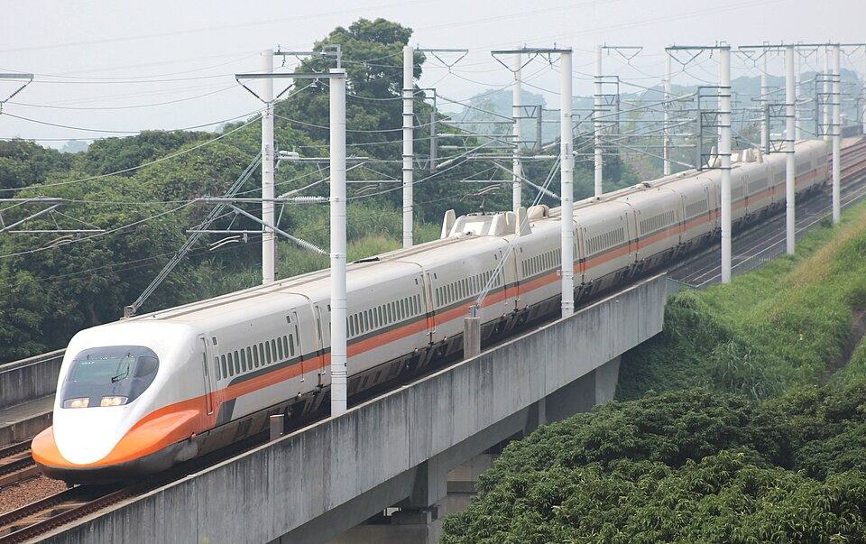
Rsa · CC BY-SA 3.0 - 15:15Check in at Palais de Chine Map
A few minutes' walk from Taipei Main Station, so the luggage trip is short. Family rooms with two double beds, and free cots on request. Rest.
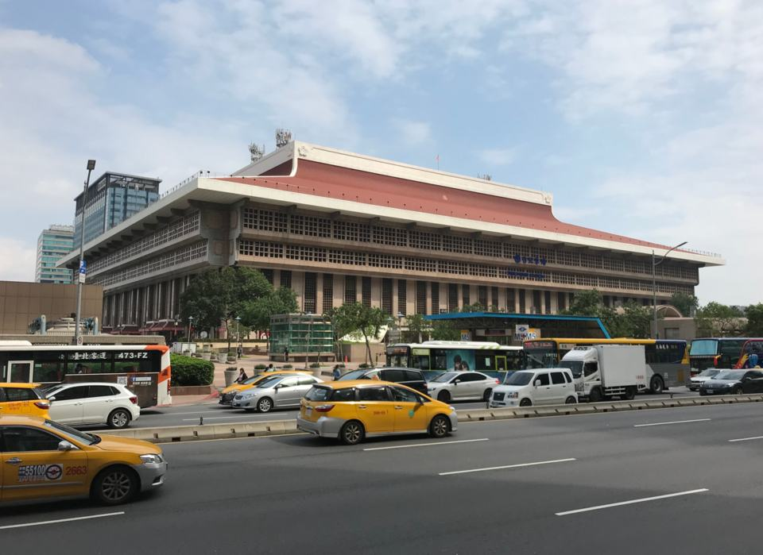
User:Stck w · CC BY-SA 4.0 - 18:00Optional night market: Ningxia Map
About 15 minutes' walk or a short taxi from the hotel. Compact, food-focused and open every night. Try Liu Yu Zi's fried taro balls with salted egg yolk, oyster omelette and braised pork rice. Easy first Taipei evening.
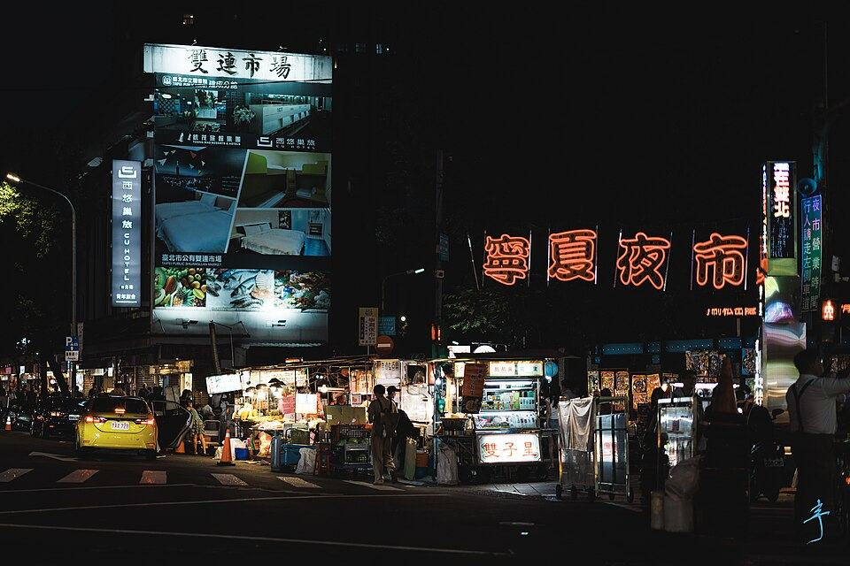
迷惘的人生 · CC BY-SA 2.0
Driving today
- Lake → Taichung HSR station ~70 km, the last drive of the trip.
- Book a one-way rental: collect at Taoyuan airport on Day 1, return at Taichung HSR station.
- From here on it's trains, MRT, taxis and a hired driver.
Baby & grandparents
- HSR stations have lifts, nursing rooms and accessible toilets.
- Fold the stroller on the train; carrier for the platform crowds.
If it rains
- The ropeway may pause in strong wind or storms. Visit Xiangshan Visitor Center instead and leave a little earlier.
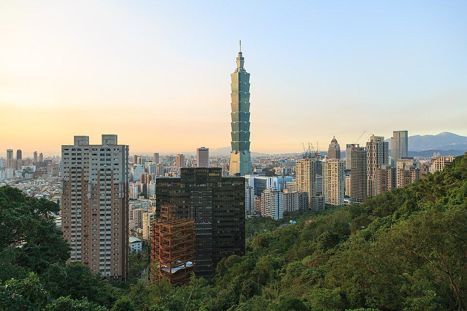
Up Taipei 101, down to dumplings
The view from the 89th floor, the giant swinging damper that keeps the tower steady, xiaolongbao for lunch, and a lantern-lit temple and night market in the evening.
- 08:00Beef noodle soup breakfast-brunch
Taipei's signature bowl: slow-braised beef in a rich broth. Plenty of shops near the hotel; ask the front desk for their favourite.
- 10:00Taipei 101 Observatory Map
Opens 10:00. The world's fastest lifts shoot up to the 89th-floor deck in under a minute. Don't miss the 660-tonne golden damper ball on 88F that swings to keep the tower steady in typhoons. About NT$600 for adults; babies free. 60–90 minutes.
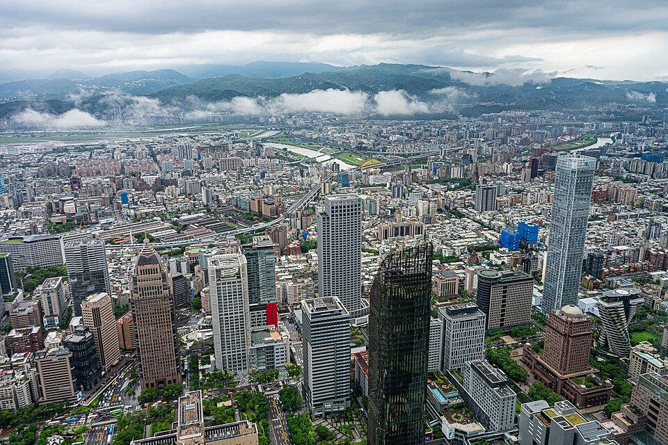
xiangyang17 · CC BY 2.0 - 11:30Din Tai Fung, Taipei 101 Map
In the basement of the Taipei 101 mall. Take a queue number before going up the tower, or go straight after. Xiaolongbao are the benchmark; add the truffle ones, shrimp and pork wontons in chilli oil, and fried rice for the grandparents.
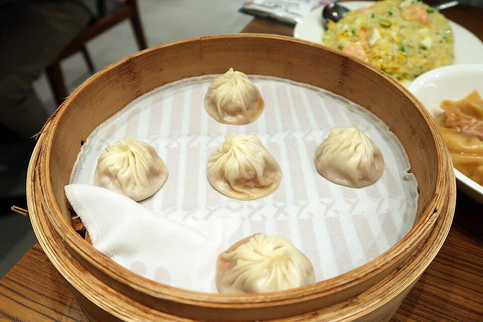
Wpcpey · CC BY 4.0 - 13:30Back to the hotel to rest
MRT Red Line from Taipei 101 to Taipei Main Station, about 20 minutes, or a taxi.
Heeheemalu · CC BY-SA 4.0 - 16:45Ciyou Temple Map
A 1753 temple to Mazu, goddess of the sea, at the entrance of Raohe Night Market. Beautiful when lit up at dusk. Clean toilets too.
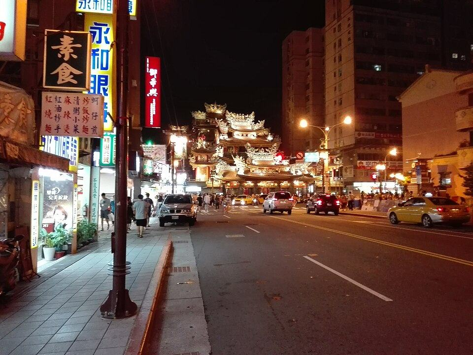
Sky xe · CC BY-SA 3.0 - 17:15Optional night market: Raohe Map
One long, straight lane, so it's easy to navigate. Go before 19:00, when it gets packed. The charcoal-baked pepper buns at the temple gate are the must-have (around NT$60, queue moves fast), then Chen Dong's herbal pork rib soup, Michelin-listed braised snacks and fire-and-ice pineapple buns.
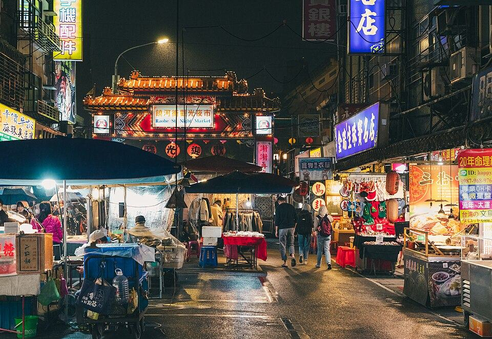
Ji Soo Song · CC BY 2.0
Getting around
- MRT: Taipei Main Station → Taipei 101/World Trade Center on the Red Line.
- Raohe: Green Line to Songshan station, exit 5.
- Uber XL or two taxis for door-to-door.
Eat today
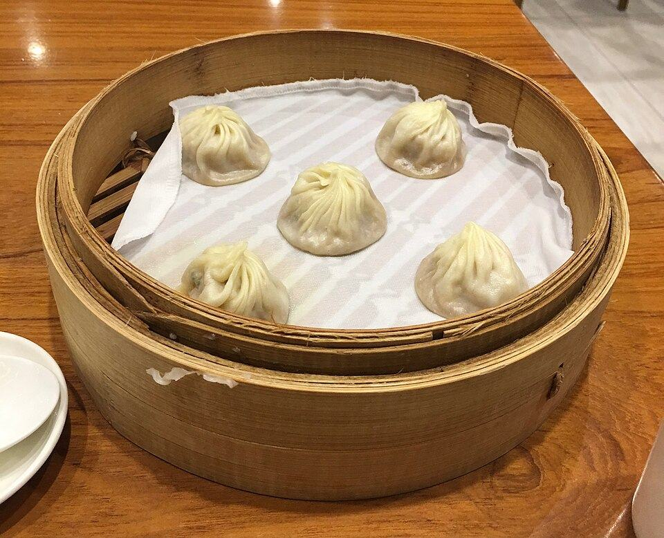
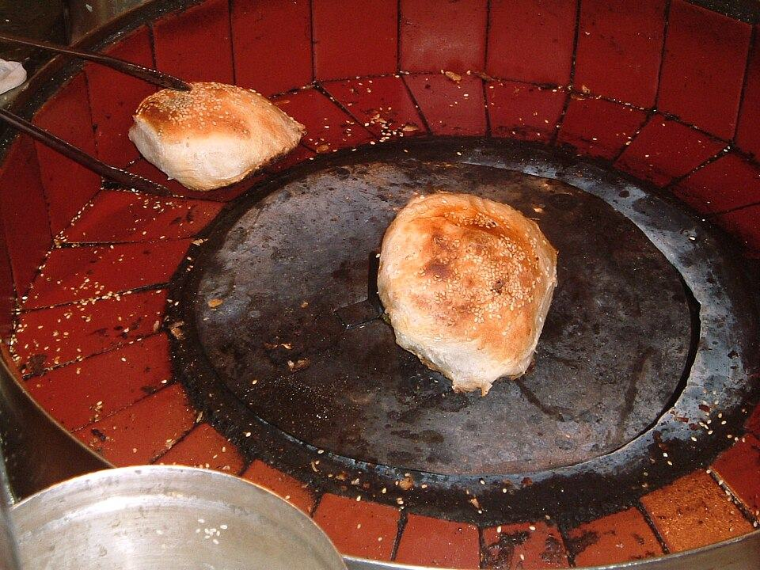
- Beef noodle soup
- Xiaolongbao
- Pepper buns
- Herbal rib soup
If it rains
- Everything today is indoors or covered except the night market, which has awnings over most stalls.
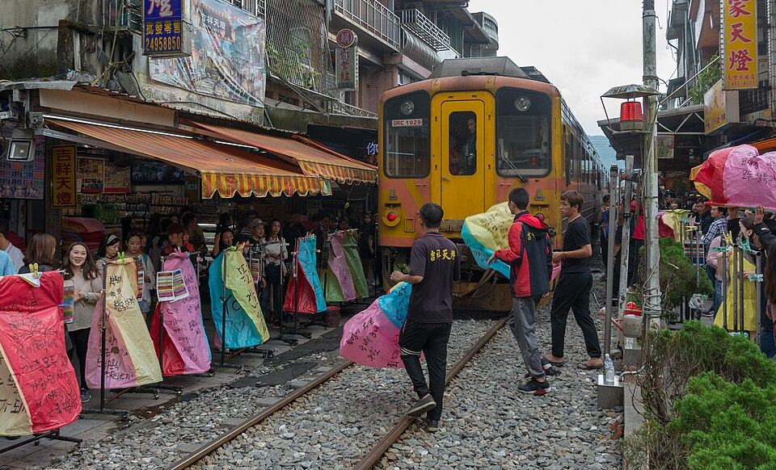
Lanterns, mountain teahouses and Keelung's night market
A day out of the city with a hired driver: write wishes on a sky lantern in Shifen, tea with a view in hillside Jiufen, then Keelung's famous harbour night market for dinner.
- 09:00Driver picks you up at the hotel
A 9-seater charter for about 10 hours, with an infant seat, booked through KKday or Klook ("Jiufen Shifen private charter"). About an hour to Shifen through the hills.
OnionBulb · CC BY-SA 4.0 - 10:00Release a sky lantern at Shifen Map
Pick a lantern (about NT$200 for one colour, NT$250 for four), everyone writes their wishes on the sides, then staff help you launch it from the old railway tracks between passing trains. Takes 15–30 minutes and makes great family photos.
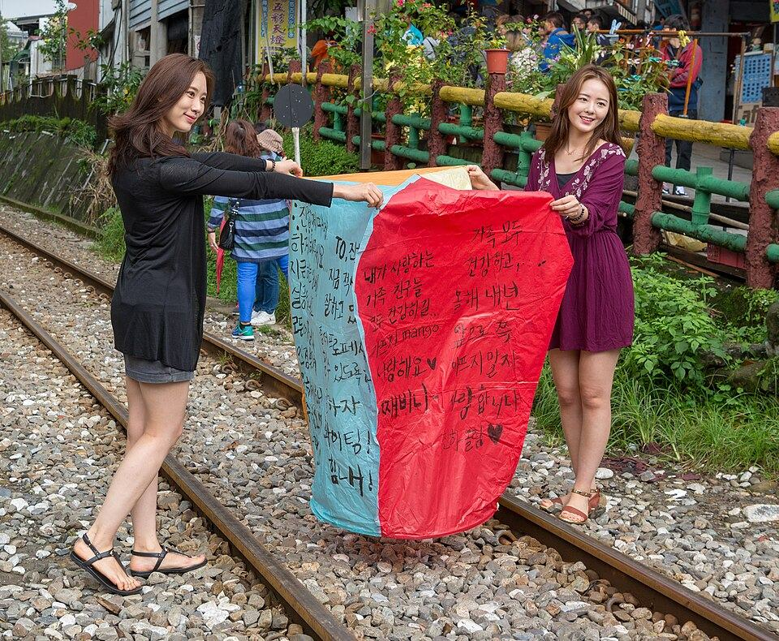
xiquinhosilva · CC BY 2.0 - 10:45Shifen Waterfall Map
Taiwan's widest waterfall, free to visit. The driver can drop you near the entrance to save the 25-minute walk from the old street; the path is paved with a suspension bridge. Winter hours close at 16:00.
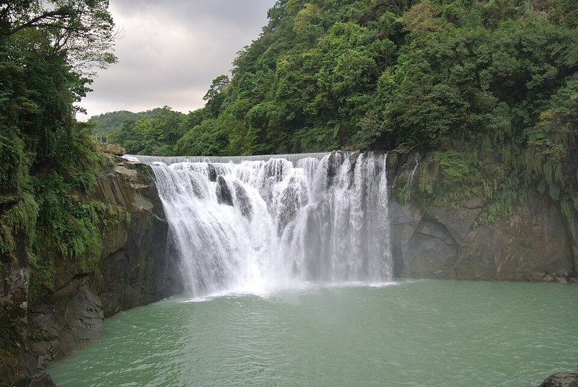
Suicasmo · CC BY-SA 4.0 - 12:30Lunch and tea in Jiufen Map
A gold-rush town clinging to a hillside above the sea. Graze down the old street: taro balls, peanut ice-cream rolls, fish balls. Then sit down at A-Mei Teahouse Map, the red-lantern building said to have inspired Spirited Away, for tea with a sea view.
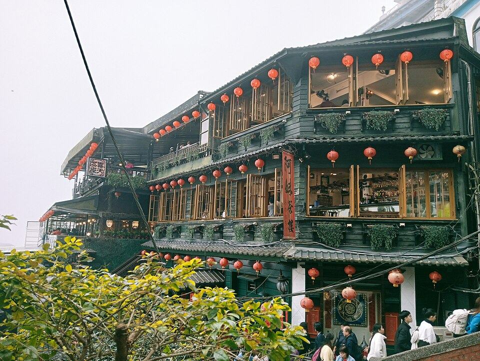
Ralff Nestor Nacor · CC BY-SA 4.0 - 15:00Rest in the van
Leave Jiufen before the afternoon crowds. The baby naps on the 30-minute drive down to Keelung; grandparents can rest too.
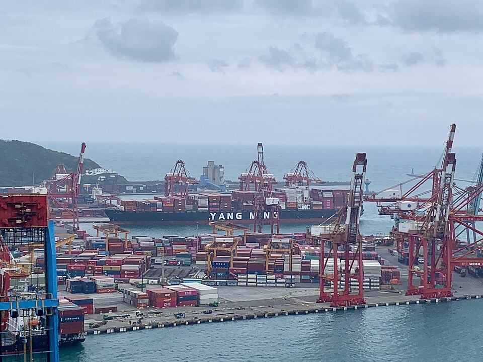
Heeheemalu · CC BY-SA 4.0 - 17:00Keelung Miaokou Night Market Map
Around Dianji Temple, with numbered stalls under yellow lanterns. It gets going from about 17:30, so arriving early means seats. Crab soup with glutinous oil rice (stall 5), the "nutritious sandwich" (stall 58), Keelung-style tempura, pot-side noodles and bubble-bubble shaved ice (stall 37).
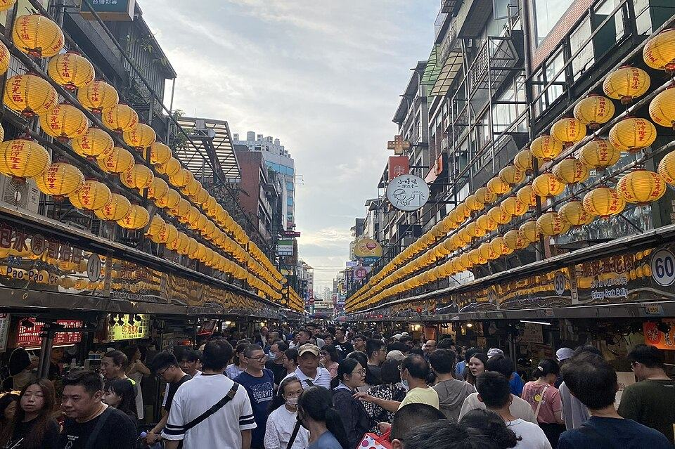
Bigmorr · CC0 - 19:15Back to Taipei
About 40 minutes on the freeway; everyone sleeps.
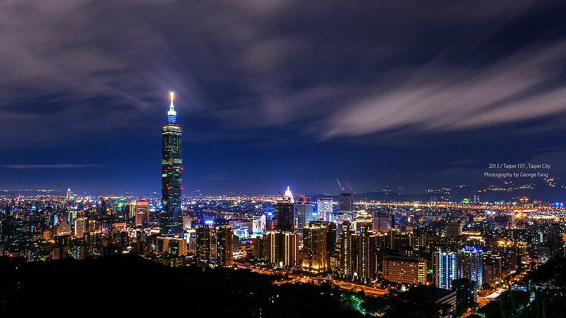
fcant.tw · CC BY-SA 2.0
Getting around
- A hired driver is far easier than trains today: Shifen, Jiufen and Keelung are on three different lines.
- Expect roughly NT$4,000–5,000 for a 10-hour 9-seater; confirm the infant seat when booking.
Eat today
- Jiufen taro balls
- Peanut ice-cream roll
- Keelung crab soup and oil rice
- Nutritious sandwich
- Keelung tempura
Baby & grandparents
- Jiufen's old street is narrow with steps: carrier, not stroller.
- Grandparents can skip the stairs and wait at the teahouse.
If it rains
- Lanterns still fly in light rain. Jiufen is moody and beautiful in mist, and most of the old street is covered.
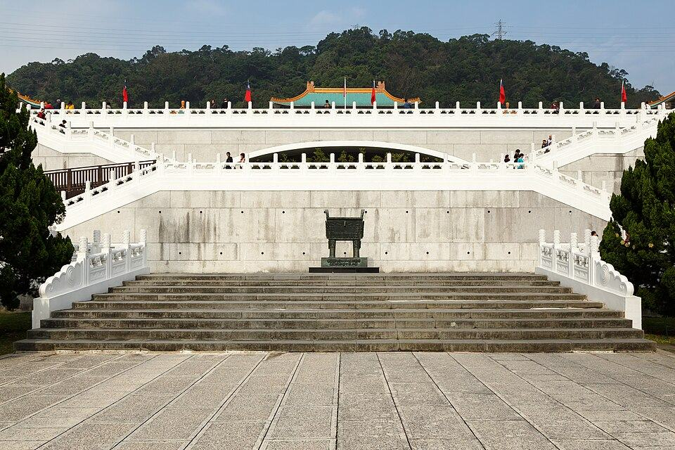
Treasures and old Taipei
The imperial collection at the National Palace Museum, a rest, then Taipei's oldest trading street for tea and dried goods, sunset by the river, and a last night market.
- 09:30National Palace Museum Map
About 25 minutes by taxi. One of the world's great collections of Chinese imperial art. Head to the third floor first for the Jadeite Cabbage and the Meat-Shaped Stone before the tour groups arrive. Open 09:00–17:00, closed Mondays; about NT$350 for adults, under-6s free. Allow 2 hours.
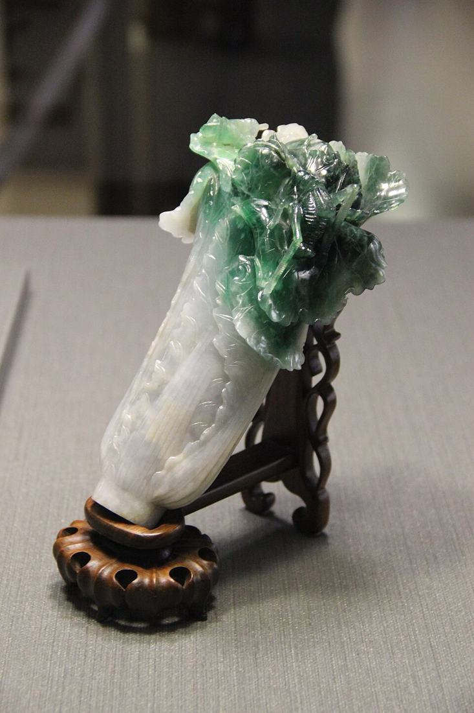
Gary Todd · CC0 - 12:00Lunch near the museum
The museum's own restaurant, Silks Palace, makes dim sum versions of the famous pieces, including a "cabbage" and a "meat stone". Fun for everyone.
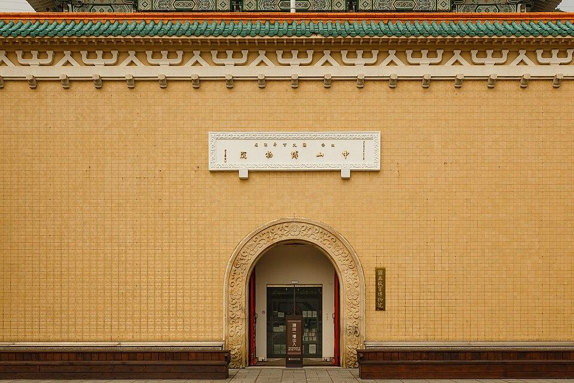
CEphoto, Uwe Aranas · CC BY-SA 3.0 - 13:30Hotel rest
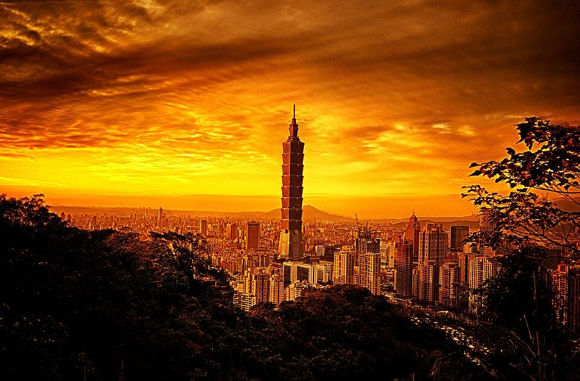
Debjyoti Bardhan · CC BY 2.0 - 16:00Dihua Street, Dadaocheng Map
Taipei's oldest trading street: restored shophouses selling dried mushrooms, mullet roe, herbs, teas and fabrics. Best place for food gifts to take home. About 10 minutes by taxi from the hotel; flat and stroller-friendly.
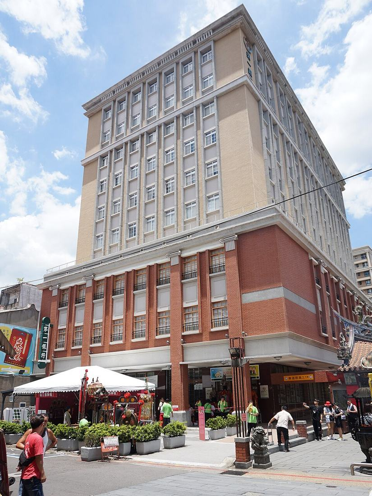
Solomon203 · CC BY-SA 4.0 - 17:00Sunset at Dadaocheng Wharf Map
A short walk from Dihua Street. Watch the sun go down over the Tamsui River (about 17:05).
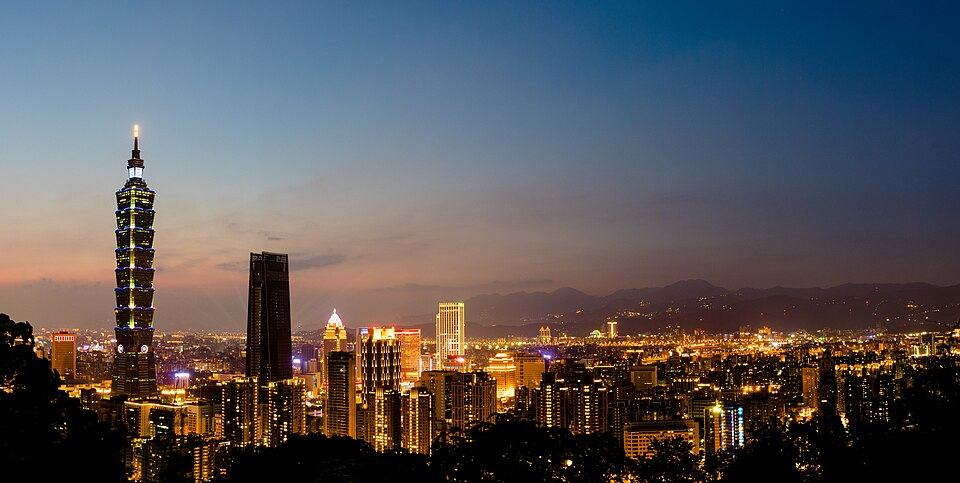
Jorge Cancela · CC BY 2.0 - 18:30Optional night market: Shilin Map
Taipei's biggest and most famous, about 20 minutes by taxi. It's a Friday so it will be busy; go straight for the basement food court for seats. Giant fried chicken cutlets, oyster omelettes, grilled squid and mango shaved ice.
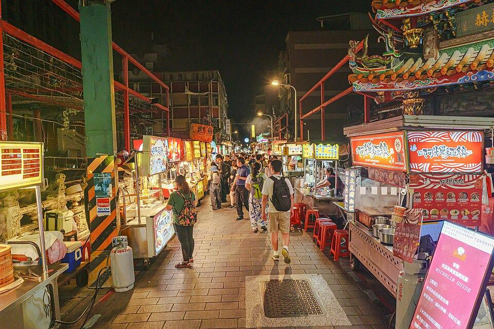
Junyu-K · CC BY-SA 4.0
Getting around
- Taxis or Uber XL all day; everything is 10–25 minutes from the hotel.
- Shilin: Red Line to Jiantan station if you prefer the MRT.
Eat today
- Silks Palace "treasure" dim sum
- Mullet roe and dried mango from Dihua Street
- Shilin fried chicken
Baby & grandparents
- The museum has lifts, wheelchairs and a nursing room.
- Strollers are fine in the galleries.
If it rains
- Skip the wharf sunset; Dihua Street's covered arcades keep you dry.
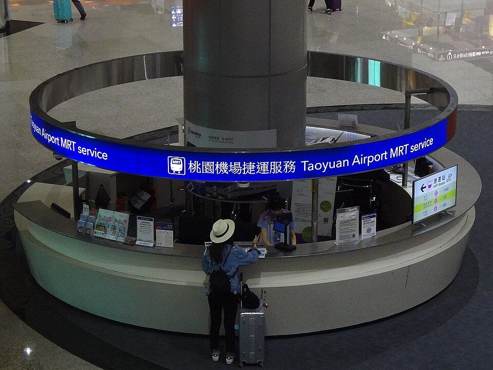
A famous breakfast, then home
One last queue for Taipei's most famous breakfast, check your bags in at Taipei Main Station, and ride the express train to the airport.
- 07:00Fu Hang Soy Milk Map
Taipei's most famous breakfast, a 15-minute taxi away. The queue is often 30–60 minutes, so one adult queues while everyone else follows later. Thick-baked egg flatbread, fried dough in sesame bread and warm sweet or savoury soy milk.

Heeheemalu · CC BY-SA 4.0 - 09:00Pack and check out
Snacks and tea in hand luggage, liquids in checked bags.
User:Stck w · CC BY-SA 4.0 - Flight −3 hIn-town check-in at Taipei Main Station Map
If you fly China Airlines or EVA Air, check your bags in at the Airport MRT station (A1) up to 3 hours before departure and travel to the airport hands-free. Open 06:00–21:30. Other airlines: take the bags with you.
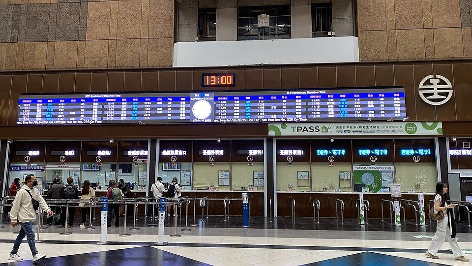
Bigmorr · CC BY-SA 4.0 - Flight −2.5 hAirport MRT express to Taoyuan Map
Purple express trains take about 40 minutes (around NT$160). Lifts and luggage space throughout.
Meutnake Ah ManHO · CC0 - AfternoonFly Taoyuan → Singapore
About 4.5 hours. Request the bassinet again at check-in.
4300streetcar · CC BY 4.0
Getting around
- No car today. Hotel → Taipei Main Station is a short walk.
- With lots of bags, a taxi to the airport (~50 min) is the door-to-door alternative.
Baby & grandparents
- Airport MRT has lifts and priority seats.
- Nursing rooms past security at Taoyuan.
The eating list
Eighteen things to taste before we fly home, in trip order. Tick them off as you go.

Battlesnake1 · CC0 Pearl milk tea珍珠奶茶Taichung, where it's said to have started. Day 1–2.
Connie Ma (fickr user "ironypoisoning") · CC BY-SA 2.0 Sun cake太陽餅Taichung. Flaky pastry, malt-honey centre. Day 2.- Miyahara ice cream宮原眼科Taichung. Pick a cake topping. Day 2.
- Pineapple cake鳳梨酥Taichung. Miyahara's boxes make great gifts. Day 2.
Dllu · CC BY-SA 4.0 Tea eggs茶葉蛋Xuanguang Pier, Sun Moon Lake. Day 3.- Red Jade black tea紅玉紅茶Sun Moon Lake. Cinnamon and mint notes. Day 2–4.
- Millet mochi小米麻糬Ita Thao. Thao indigenous snack. Day 3.
- Fried taro balls劉芋仔芋餅Ningxia Night Market, with salted egg yolk. Day 4.
- Beef noodle soup牛肉麵Taipei's signature bowl. Day 5.
Wpcpey · CC BY 4.0 Xiaolongbao小籠包Din Tai Fung, Taipei 101. Day 5.竹筍弟弟 · Copyrighted free use Pepper bun胡椒餅Raohe Night Market gate, straight from the clay oven. Day 5.- Herbal pork rib soup藥燉排骨Raohe Night Market. Day 5.
- Taro balls芋圓Jiufen. Chewy, in sweet soup. Day 6.
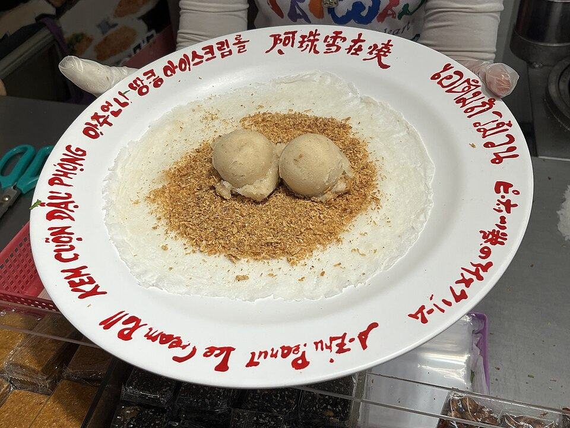
Another Believer · CC BY-SA 4.0 Peanut ice-cream roll花生捲冰淇淋Jiufen. Ice cream, shaved peanut brittle and coriander in a crêpe. Day 6.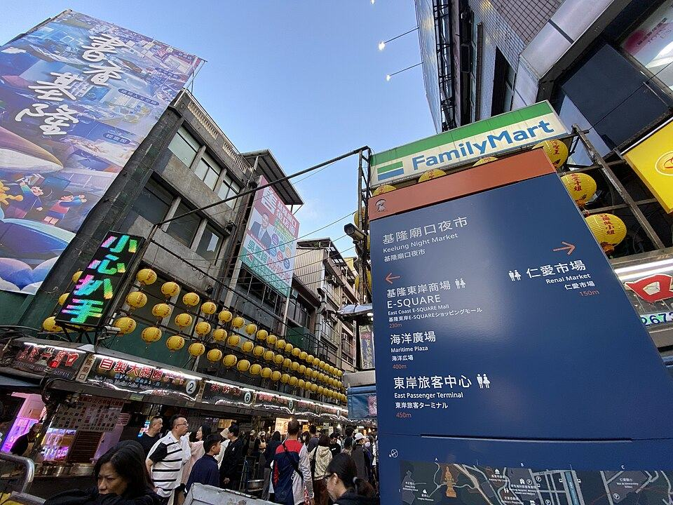
Bigmorr · CC0 Crab soup and oil rice螃蟹羹·油飯Miaokou Night Market, stall 5. Day 6.- Nutritious sandwich營養三明治Miaokou, stall 58. Fried bun, egg, ham, tomato, mayo. Day 6.
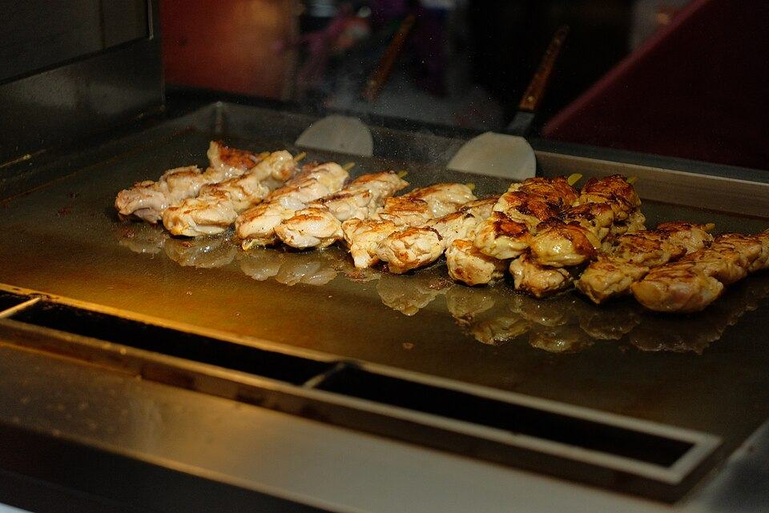
Aristorkle · CC BY-SA 4.0 Giant chicken cutlet大雞排Shilin Night Market. Day 7.Heeheemalu · CC BY-SA 4.0 Thick egg flatbread and soy milk厚餅夾蛋·豆漿Fu Hang Soy Milk. Day 8.
Famous shops can sell out or change hours. Check the Google Maps listing the day before.
Car for the countryside, trains in the city
We drive ourselves for the first four days, from Taoyuan airport to Taichung and Sun Moon Lake, then hand the car back at Taichung HSR station and take the bullet train to Taipei. In Taipei it's the MRT, taxis, and a hired driver for the Keelung day.
Self-drive
- One-way rental: collect at Taoyuan airport, return at Taichung HSR station on Day 4. Both Enterprise/Alamo and local firms have counters at each.
- About 300 km in total; a drop-off fee applies.
High-speed rail
- Taichung → Taipei in about 50–60 minutes.
- Under-6s ride free on a lap; book reserved seats near the luggage racks.
Taipei
- MRT for longer hops, Uber XL or two taxis door to door.
- Hired 9-seater with driver for Shifen, Jiufen and Keelung on Day 6.
- Airport MRT express to Taoyuan on Day 8.
What every driver needs
- International Driving Permit from AA Singapore, about SGD 20 and same-day. Bring your licence, passport and 2 passport photos.
- On pick-up: original Singapore licence, IDP, passport, and a credit card in the main driver's name.
- A Singapore licence alone is not accepted. An IDP is valid for 30 days after arrival.
- We're taking turns, so every adult who drives needs their own IDP and must be named on the rental agreement.
- Some rental companies set an upper age limit for drivers; check it when booking if the grandparents will drive.
The car
- 5 adults, a car seat and luggage need a 9-seater van (Hyundai Staria class). A 7-seater leaves almost no boot space.
- Book a rear-facing infant car seat; Taiwan law requires one for babies under 1.
- Tolls are recorded automatically and charged at return.
- Full insurance with zero excess is worth it for scooter-heavy streets.
Driving in Taiwan, for Singapore drivers
- Drive on the right; the car is left-hand drive and the indicator and wiper stalks are swapped.
- No turning right on red. Scooters filter everywhere; check mirrors before every turn.
- Kerb colours: white = park, yellow = brief stop, red = no parking.
- Speed cameras are frequent and well signposted.
Taipei without a car
- Get an EasyCard for each adult (7-Eleven) for MRT, buses and convenience stores.
- Every MRT station has lifts; priority seats are kept for parents with babies.
- Five adults and a baby need two taxis or one Uber XL.
- Hotel → Taipei Main Station is a short walk for the HSR and the Airport MRT.
Every leg
| Day | From → to | How | Time |
|---|---|---|---|
| 1 | Taoyuan airport → Taichung | Self-drive, ~150 km | ~2 h |
| 2 | Taichung → tea factory → Sun Moon Lake | Self-drive, ~75 km | ~1.5 h |
| 4 | Sun Moon Lake → Taichung HSR station | Self-drive, ~70 km | ~1.25 h |
| 4 | Taichung → Taipei | High-speed rail | ~1 h |
| 6 | Taipei → Shifen → Jiufen → Keelung → Taipei | Hired driver | ~2.5 h in total |
| 8 | Taipei Main Station → Taoyuan airport | Airport MRT express | ~40 min |
Approximate, without stops or traffic.
Flights
- Out: Sat 28 Nov, a morning flight Singapore → Taoyuan landing by ~13:00.
- Home: Sat 5 Dec, an afternoon flight Taoyuan → Singapore.
- China Airlines or EVA Air let you check bags in at Taipei Main Station on the last day.
- Bassinet row for the baby on both legs.
Pack and prep
Photos and sources
- Sun Moon Lake, Taiwan 20230202.jpg by Ken Marshall, CC BY 2.0
- National Taichung Theater 2019.jpg by Nico Kaiser, CC BY 2.0
- China Airlines Boeing 737-800 B-18661 at Taipei Songshan February 2026 2.jpg by 4300streetcar, CC BY 4.0
- TW 台灣 Taiwan 台北 Taipei 臺灣桃園機場 Taoyuan Int'l Airport 入境區 Arrival hall March 2024 R12S 09.jpg by Meutnake Ah ManHO, CC0
- Hyundai Staria Leonberg 2022 1X7A0432.jpg by Alexander Migl, CC BY-SA 4.0
- Taiwan National Freeway 3 viewed from THSR.jpg by Benlisquare, CC BY-SA 4.0
- Qingshui Service Area, 2026 (05).jpg by Bahnfrend, CC BY-SA 4.0
- Taichung Skyline.jpg by michael spadoni, CC0
- Shin Kong Mitsukoshi Taichung Store 8F 2019.jpg by Wpcpey, CC BY 4.0
- National Taichung Theater (2024-03-09).jpg by Theserious, CC0
- 1 fengjia night market 2019.jpg by Chensiyuan, CC BY-SA 4.0
- Miyahara Eye Hospital 20180301.jpg by YangChen(TW), CC BY 2.0
- Miyahara, Taichung, Aug 2024.jpg by Ralff Nestor Nacor, CC BY-SA 4.0
- Chun Shui Tang (Original Store), Taichung, Jan 2025 (3).jpg by Ralff Nestor Nacor, CC BY-SA 4.0
- The Calligraphy Greenway in Taichung.jpg by Dquai, CC BY-SA 4.0
- Shin Kong Mitsukoshi Taichung Zhonggang.jpg by 黃 zero, CC BY-SA 2.0
- NationalFreeway3 20220723000.jpg by OnionBulb, CC BY-SA 4.0
- 日月老茶廠 Tea Farm, Sun Moon Lake 14.jpg by 舟集 Boattoad, CC BY-SA 4.0
- 日月老茶廠 Tea Farm, Sun Moon Lake 13.jpg by 舟集 Boattoad, CC BY-SA 4.0
- View of Sun Moon Lake from The Lalu Sun Moon Lake 01.jpg by Dquai, CC BY-SA 4.0
- Shuishe Pier at night.jpg by Dquai, CC BY-SA 4.0
- 2012-11-19 grilled sausages at the Shilin night market.jpg by Maya-Anaïs Y., CC BY 2.0
- Taiwanese Suncake (flickr11069409046).jpg by Connie Ma (fickr user "ironypoisoning"), CC BY-SA 2.0
- Pearl Milk Tea in Chun Shui Tang.jpg by Battlesnake1, CC0
- Boats at Ita Thao Pier 20150719.jpg by ironypoisoning, CC BY-SA 2.0
- 日出日月潭 - Sunrise at the Sun Moon Lake - 2012.02 - panoramio.jpg by rheins, CC BY 3.0
- View of Sun Moon Lake from The Lalu Hotel-02.2024-05-10.jpg by 阿道, CC BY-SA 4.0
- Sun-Moon-Lake-Taiwan.jpg by Webbyj, CC BY-SA 3.0
- Tea eggs ez.jpg by Dllu, CC BY-SA 4.0
- Ita Thao Shopping Street 01.JPG by Abasaa, Public domain
- In The Lalu Sun Moon Lake.jpg by Dquai, CC BY-SA 4.0
- Sunset At Sun Moon Lake (168797703).jpeg by Jimmy Kao, CC BY-SA 3.0
- Ita Thao at night.jpg by YangChen(TW), CC BY 2.0
- View of Sun Moon Lake from The Lalu Sun Moon Lake 02.jpg by Dquai, CC BY-SA 4.0
- Sun Moon Lake Ropeway 03.jpg by Bernard Gagnon, CC BY-SA 3.0
- 日月老茶廠 Tea Farm, Sun Moon Lake 01.jpg by 舟集 Boattoad, CC BY-SA 4.0
- Nantou-County Taiwan Sun-Moon-Lake-Ropeway-02.jpg by CEphoto, Uwe Aranas, CC BY-SA 3.0
- NationalFreeway3 20220723007.jpg by OnionBulb, CC BY-SA 4.0
- Taiwan High Speed Rail train 157 at Taichung HSR station March 2026 1.jpg by 4300streetcar, CC BY 4.0
- THSR 700T TR17 20130907.jpg by Rsa, CC BY-SA 3.0
- Taipei main station exterior 2018.png by User:Stck w, CC BY-SA 4.0
- Ningxia Night Market 20250520.jpg by 迷惘的人生, CC BY-SA 2.0
- Taipei Taiwan Taipei-101-Tower-01.jpg by CEphoto, Uwe Aranas, CC BY-SA 3.0
- View of skyscrapers from Taipei 101 Observatory 20250518.jpg by xiangyang17, CC BY 2.0
- Din Tai Fung XiaoLongBao 2019.jpg by Wpcpey, CC BY 4.0
- Taipei Skyline 2018.jpg by Heeheemalu, CC BY-SA 4.0
- Songshan Ciyou Temple front 20160915 night.jpg by Sky xe, CC BY-SA 3.0
- Raohe Night Market 2022.jpg by Ji Soo Song, CC BY 2.0
- Truffle Soup Dumplings at Din Tai Fung.jpg by Okadiputera, CC BY-SA 4.0
- Pepper bun at Raohe Street Night Market 20070622.jpg by 竹筍弟弟, Copyrighted free use
- TRA DRC1029 and Pingxi Sky Lanterns at Shifen Old Street 20171028.jpg by xiquinhosilva, CC BY 2.0
- Two women holding sky lantern on the rail track in Shifen.jpg by xiquinhosilva, CC BY 2.0
- Shifen Waterfall 20130902.jpg by Suicasmo, CC BY-SA 4.0
- A-Mei Teahouse, Jiufen, New Taipei, Feb 2025 (2).jpg by Ralff Nestor Nacor, CC BY-SA 4.0
- Keelung Harbour 20241105.jpg by Heeheemalu, CC BY-SA 4.0
- Miaokou Night Market 20240907 (IMG 8390).jpg by Bigmorr, CC0
- Taipei Skyline 2013.jpg by fcant.tw, CC BY-SA 2.0
- Taipei Taiwan National-Palace-Museum-01.jpg by CEphoto, Uwe Aranas, CC BY-SA 3.0
- Jadeite Cabbage, Palace Museum, Taipei, Taiwan.jpg by Gary Todd, CC0
- Taipei Taiwan National-Palace-Museum-04.jpg by CEphoto, Uwe Aranas, CC BY-SA 3.0
- Taipei skyline at dusk.jpg by Debjyoti Bardhan, CC BY 2.0
- Ta-Tao-Cheng Branch, First Commercial Bank 20200718.jpg by Solomon203, CC BY-SA 4.0
- Taipei - Skyline Sunset.jpg by Jorge Cancela, CC BY 2.0
- 202606 the night view of Danan Rd. section on Shilin Night Market.jpg by Junyu-K, CC BY-SA 4.0
- Taoyuan Airport MRT Service, Taoyuan Airport Terminal 2 20180512.jpg by Solomon203, CC BY-SA 4.0
- Taiwanese egg crêpe danbing with corn.jpg by Heeheemalu, CC BY-SA 4.0
- Concourse of Taipei Main Station 20250216 (IMG 9723).jpg by Bigmorr, CC BY-SA 4.0
- A-Zhu Peanut Ice Cream Roll, Jiufen Old Street, 2024.jpg by Another Believer, CC BY-SA 4.0
- Keelung Miaokou Night Market Entrance 20240215.jpg by Bigmorr, CC0
- Skewered meat sold in Shilin Night Market.jpg by Aristorkle, CC BY-SA 4.0
- Driving requirements: GoodCars guide for Singaporeans, Foreigners in Taiwan IDP FAQ
- Night markets: Taiwanderers on Miaokou, Taiwan Obsessed on Raohe
- Sights: National Palace Museum, Taipei 101, Shifen, Sun Moon Lake Ropeway
- In-town check-in: Executive Traveller